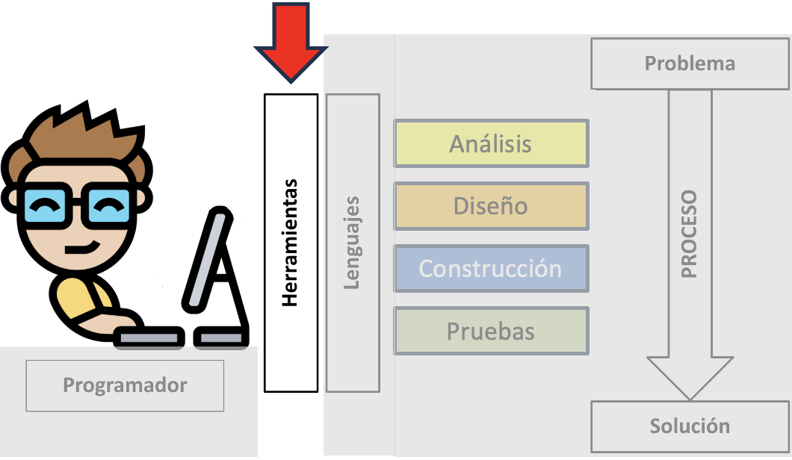
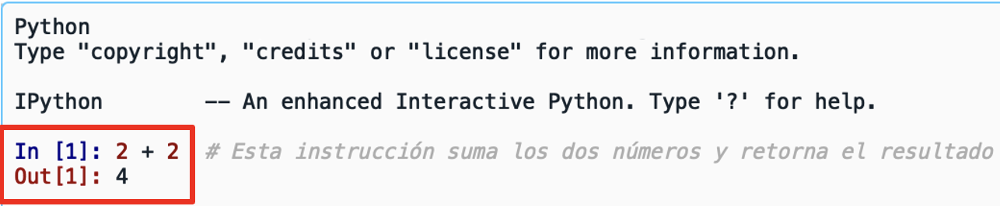
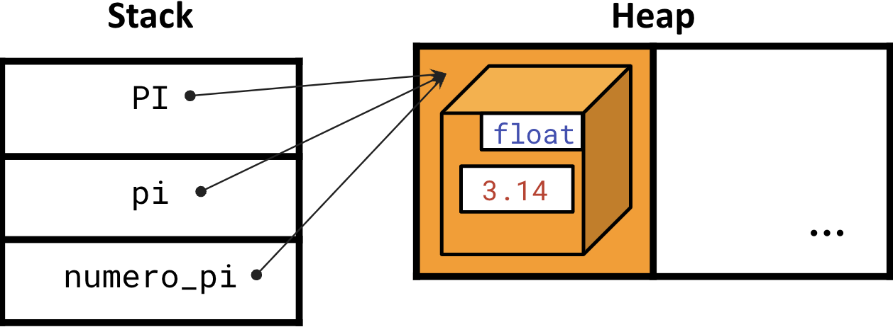
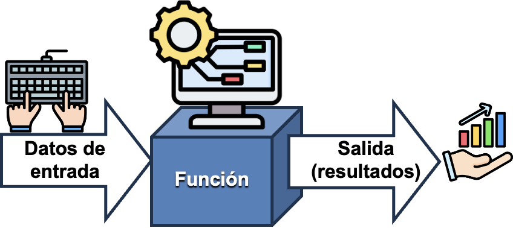

<!DOCTYPE html>
<html lang="en">
  <head>
    <meta charset="utf-8" />
    <meta name="viewport" content="width=device-width, initial-scale=1.0, maximum-scale=1.0, user-scalable=no" />

    <title></title>
    <link rel="stylesheet" href="dist/reveal.css" />
    <link rel="stylesheet" href="dist/theme/iph.css" id="theme" />
    <link rel="stylesheet" href="plugin/highlight/spyder.css" />
	<link rel="stylesheet" href="css/layout.css" />
	<link rel="stylesheet" href="plugin/customcontrols/style.css">


    <script defer src="dist/fontawesome/all.min.js"></script>

	<script type="text/javascript">
		var forgetPop = true;
		function onPopState(event) {
			if(forgetPop){
				forgetPop = false;
			} else {
				parent.postMessage(event.target.location.href, "app://obsidian.md");
			}
        }
		window.onpopstate = onPopState;
		window.onmessage = event => {
			if(event.data == "reload"){
				window.document.location.reload();
			}
			forgetPop = true;
		}

		function fitElements(){
			const itemsToFit = document.getElementsByClassName('fitText');
			for (const item in itemsToFit) {
				if (Object.hasOwnProperty.call(itemsToFit, item)) {
					var element = itemsToFit[item];
					fitElement(element,1, 1000);
					element.classList.remove('fitText');
				}
			}
		}

		function fitElement(element, start, end){

			let size = (end + start) / 2;
			element.style.fontSize = `${size}px`;

			if(Math.abs(start - end) < 1){
				while(element.scrollHeight > element.offsetHeight){
					size--;
					element.style.fontSize = `${size}px`;
				}
				return;
			}

			if(element.scrollHeight > element.offsetHeight){
				fitElement(element, start, size);
			} else {
				fitElement(element, size, end);
			}		
		}


		document.onreadystatechange = () => {
			fitElements();
			if (document.readyState === 'complete') {
				if (window.location.href.indexOf("?export") != -1){
					parent.postMessage(event.target.location.href, "app://obsidian.md");
				}
				if (window.location.href.indexOf("print-pdf") != -1){
					let stateCheck = setInterval(() => {
						clearInterval(stateCheck);
						window.print();
					}, 250);
				}
			}
	};


        </script>
  </head>
  <body>
    <div class="reveal">
      <div class="slides"><section  data-markdown><script type="text/template"><!-- .slide: class="has-light-background drop" data-background-color="#f8f8f8" -->
<div class="" style="position: absolute; left: 0px; top: 0px; height: 700px; width: 960px; min-height: 700px; display: flex; flex-direction: column; align-items: center; justify-content: center" absolute="true">

### <i class="fas fa-award"></i> IP Honores

 ####  *Laboratorio 1 de Nivel 1 - N1-L1*
 

[Eduardo Rosales](mailto:ee.rosales24@uniandes.edu.co)

Departamento de Ingeniería de Sistemas y Computación

Universidad de los Andes
</div></script></section><section  data-markdown><script type="text/template"><!-- .slide: class="has-light-background drop" data-background-color="#f8f8f8" -->
<div class="" style="position: absolute; left: 0px; top: 0px; height: 700px; width: 960px; min-height: 700px; display: flex; flex-direction: column; align-items: center; justify-content: center" absolute="true">

### Instrucciones generales

- **Objetivo**
	- Familiarizarse con:
		- Spyder
	- Comprender los conceptos de:
		- Variable y la instrucción de asignación
		- Identidad de un objeto
		- Tipado dinámico

<br>

- **¿Preguntas?**
	- Formule su pregunta de forma **muy clara y concisa**
		- Luego (**y solo luego de esto**)
			- Levante la mano
</div></script></section><section  data-markdown><script type="text/template"><!-- .slide: class="has-light-background drop" data-background-color="#f8f8f8" -->
<div class="" style="position: absolute; left: 0px; top: 0px; height: 700px; width: 960px; min-height: 700px; display: flex; flex-direction: column; align-items: center; justify-content: center" absolute="true">

###  Siga paso a paso las siguientes instrucciones
</div></script></section><section  data-markdown><script type="text/template"><!-- .slide: class="has-light-background drop" data-background-color="#f8f8f8" -->
<div class="" style="position: absolute; left: 0px; top: 0px; height: 700px; width: 960px; min-height: 700px; display: flex; flex-direction: column; align-items: center; justify-content: center" absolute="true">

### Equipo

- Seleccione una opción:
	1. [Usaré un equipo del laboratorio](https://eerosales24.github.io/iph_2025_10/n1/n1_l1/#/7)

	<br>

	2. [Usaré mi propio equipo](https://eerosales24.github.io/iph_2025_10/n1/n1_l1/#/4)
</div></script></section><section  data-markdown><script type="text/template"><!-- .slide: class="has-light-background drop" data-background-color="#f8f8f8" -->
<div class="" style="position: absolute; left: 0px; top: 0px; height: 700px; width: 960px; min-height: 700px; display: flex; flex-direction: column; align-items: center; justify-content: center" absolute="true">

### Equipo propio

- Seleccione una opción:
	1. [Ya tengo el software **Anaconda** instalado](https://eerosales24.github.io/iph_2025_10/n1/n1_l1/#/7)

	<br>

	1. [No tengo ese software instalado](https://eerosales24.github.io/iph_2025_10/n1/n1_l1/#/5)
</div></script></section><section  data-markdown><script type="text/template"><!-- .slide: class="has-light-background drop" data-background-color="#f8f8f8" -->
<div class="" style="position: absolute; left: 0px; top: 0px; height: 700px; width: 960px; min-height: 700px; display: flex; flex-direction: column; align-items: center; justify-content: center" absolute="true">

### Equipo propio - Instalación de Anaconda (1/2)

- Descargue el instalador de Anaconda:
	1.  Windows:
		- [64-Bit Graphical Installer (912.3M)](https://repo.anaconda.com/archive/Anaconda3-2024.10-1-Windows-x86_64.exe)
	2.  Mac (IOS):
		- Procesador _Silicon_:
			- [64-Bit (Apple silicon) Graphical Installer (704.7M)](https://repo.anaconda.com/archive/Anaconda3-2024.10-1-MacOSX-arm64.pkg)
		- Procesador _Intel_:
			- [64-Bit (Intel chip) Graphical Installer (734.7M)](https://repo.anaconda.com/archive/Anaconda3-2024.10-1-MacOSX-x86_64.pkg)
	3.  Linux:
		- https://www.anaconda.com/download/success
</div></script></section><section  data-markdown><script type="text/template"><!-- .slide: class="has-light-background drop" data-background-color="#f8f8f8" -->
<div class="" style="position: absolute; left: 0px; top: 0px; height: 700px; width: 960px; min-height: 700px; display: flex; flex-direction: column; align-items: center; justify-content: center" absolute="true">

### Equipo propio - Instalación de Anaconda (2/2)


</div></script></section><section  data-markdown><script type="text/template"><!-- .slide: class="has-light-background drop" data-background-color="#f8f8f8" -->
<div class="" style="position: absolute; left: 0px; top: 0px; height: 700px; width: 960px; min-height: 700px; display: flex; flex-direction: column; align-items: center; justify-content: center" absolute="true">

### Abrir Spyder (1/2)

- Busque en sus **Programas** a Spyder y abra esta aplicación:


</div></script></section><section  data-markdown><script type="text/template"><!-- .slide: class="has-light-background drop" data-background-color="#f8f8f8" -->
<div class="" style="position: absolute; left: 0px; top: 0px; height: 700px; width: 960px; min-height: 700px; display: flex; flex-direction: column; align-items: center; justify-content: center" absolute="true">

### Abrir Spyder (2/2)

- Si no encuentra a Spyder en sus *Programas*:
	- Busque y abra la aplicación **Anaconda**
		- Luego, abra **Spyder**


<!-- .element: style="width: 80%; height: 50%" -->
</div></script></section><section  data-markdown><script type="text/template"><!-- .slide: class="has-light-background drop" data-background-color="#f8f8f8" -->
<div class="" style="position: absolute; left: 0px; top: 0px; height: 700px; width: 960px; min-height: 700px; display: flex; flex-direction: column; align-items: center; justify-content: center" absolute="true">

### Herramientas


</div></script></section><section  data-markdown><script type="text/template"><!-- .slide: class="has-light-background drop" data-background-color="#f8f8f8" -->
<div class="" style="position: absolute; left: 0px; top: 0px; height: 700px; width: 960px; min-height: 700px; display: flex; flex-direction: column; align-items: center; justify-content: center" absolute="true">


- [Spyder](https://www.spyder-ide.org/)
  - Entorno de Desarrollo Integrado 
	- Integrated Development Environment - **IDE**
</div></script></section><section  data-markdown><script type="text/template"><!-- .slide: class="has-light-background drop" data-background-color="#f8f8f8" -->
<div class="" style="position: absolute; left: 0px; top: 0px; height: 700px; width: 960px; min-height: 700px; display: flex; flex-direction: column; align-items: center; justify-content: center" absolute="true">

### Spyder - Interfaz 


</div></script></section><section  data-markdown><script type="text/template"><!-- .slide: class="has-light-background drop" data-background-color="#f8f8f8" -->
<div class="" style="position: absolute; left: 0px; top: 0px; height: 700px; width: 960px; min-height: 700px; display: flex; flex-direction: column; align-items: center; justify-content: center" absolute="true">

### Editor de Spyder

- Espacio para escribir programas

<br>

		


<!-- .element: style="width: 25%; height: 45%" -->
</div></script></section><section  data-markdown><script type="text/template"><!-- .slide: class="has-light-background drop" data-background-color="#f8f8f8" -->
<div class="" style="position: absolute; left: 0px; top: 0px; height: 700px; width: 960px; min-height: 700px; display: flex; flex-direction: column; align-items: center; justify-content: center" absolute="true">

### Terminal de Spyder


- Da acceso al **intérprete de Python - IPython**
	- Muestra los resultados de ejecución del editor
	- Ejecuta directamente instrucciones Python
		
	<br>
	


<!-- .element: style="width: 25%; height: 45%" -->
</div></script></section><section  data-markdown><script type="text/template"><!-- .slide: class="has-light-background drop" data-background-color="#f8f8f8" -->
<div class="" style="position: absolute; left: 0px; top: 0px; height: 700px; width: 960px; min-height: 700px; display: flex; flex-direction: column; align-items: center; justify-content: center" absolute="true">

#  Actividad I

- **Objetivo:**
	- Aprender a usar la terminal de Spyder
</div></script></section><section  data-markdown><script type="text/template"><!-- .slide: class="has-light-background drop" data-background-color="#f8f8f8" -->
<div class="" style="position: absolute; left: 0px; top: 0px; height: 700px; width: 960px; min-height: 700px; display: flex; flex-direction: column; align-items: center; justify-content: center" absolute="true">

###  Actividad I (1/6)

- La terminal de Spyder da acceso al **intérprete de Python - IPython**
	- Este traduce (interpreta) y ejecuta código Python
		- Línea a línea 


<!-- .element: style="width: 15%; height: 30%" -->
</div></script></section><section  data-markdown><script type="text/template"><!-- .slide: class="has-light-background drop" data-background-color="#f8f8f8" -->
<div class="" style="position: absolute; left: 0px; top: 0px; height: 700px; width: 960px; min-height: 700px; display: flex; flex-direction: column; align-items: center; justify-content: center" absolute="true">

###  Actividad I (2/6)

- Ejemplo de uso del intérprete de IPython
	- A través de la terminal de Spyder


</div></script></section><section  data-markdown><script type="text/template"><!-- .slide: class="has-light-background drop" data-background-color="#f8f8f8" -->
<div class="" style="position: absolute; left: 0px; top: 0px; height: 700px; width: 960px; min-height: 700px; display: flex; flex-direction: column; align-items: center; justify-content: center" absolute="true">

###  Actividad I (3/6)


- `2 + 2`
	-  Es una **instrucción**
- `[1]`:
	- Cada línea es una celda
		- Aquí, la **celda 1**
- `In`:
	- Se **ingresa** una instrucción
</div></script></section><section  data-markdown><script type="text/template"><!-- .slide: class="has-light-background drop" data-background-color="#f8f8f8" -->
<div class="" style="position: absolute; left: 0px; top: 0px; height: 700px; width: 960px; min-height: 700px; display: flex; flex-direction: column; align-items: center; justify-content: center" absolute="true">

###  Actividad I (4/6)


- `4`:
	-  Es un **resultado** (salida)
- `Out`:
	-  La **salida** (resultado) de ejecución
		-  De una instrucción
</div></script></section><section  data-markdown><script type="text/template"><!-- .slide: class="has-light-background drop" data-background-color="#f8f8f8" -->
<div class="" style="position: absolute; left: 0px; top: 0px; height: 700px; width: 960px; min-height: 700px; display: flex; flex-direction: column; align-items: center; justify-content: center" absolute="true">

###  Actividad I (5/6)




- En resumen:
	- IPython interpreta y ejecuta la instrucción ingresada:
		- **`2 + 2`**
	-  Y muestra el resultado:
		- **`4`**
</div></script></section><section  data-markdown><script type="text/template"><!-- .slide: class="has-light-background drop" data-background-color="#f8f8f8" -->
<div class="" style="position: absolute; left: 0px; top: 0px; height: 700px; width: 960px; min-height: 700px; display: flex; flex-direction: column; align-items: center; justify-content: center" absolute="true">

###  Actividad I (6/6)

- Usando la terminal de Spyder
	- **Compruebe los resultados de la siguiente tabla**:
<table border="1" style="border-collapse: collapse; width: 100%; text-align: center;font-size: 20px;">
  <thead style="background-color: #d0e6f8;">
    <tr>
      <th style="color: black;">Operador</th>
      <th style="color: black;">Descripción</th>
      <th style="color: black;">Ejemplo</th>
      <th style="color: black;">Resultado</th>
    </tr>
  </thead>
  <tbody>
    <tr>
      <td>+</td>
      <td>Suma</td>
      <td><strong>5 + 5</strong></td>
      <td><strong>10</strong></td>
    </tr>
    <tr>
      <td>−</td>
      <td>Resta</td>
      <td><strong>10 - 2</strong></td>
      <td><strong>8</strong></td>
    </tr>
    <tr>
      <td>*</td>
      <td>Multiplicación</td>
      <td><strong>7 * 3</strong></td>
      <td><strong>21</strong></td>
    </tr>
    <tr>
      <td>/</td>
      <td>División</td>
      <td><strong>9 / 2</strong></td>
      <td><strong>4.5</strong></td>
    </tr>
    <tr>
      <td>//</td>
      <td>División (entera)</td>
      <td><strong>9 // 2</strong></td>
      <td><strong>4</strong></td>
    </tr>
    <tr>
      <td>%</td>
      <td>Módulo  (o resto)</td>
      <td><strong>9 % 2</strong></td>
      <td><strong>1</strong></td>
    </tr>
    <tr>
      <td>**</td>
      <td>Exponenciación</td>
      <td><strong>2 ** 4</strong></td>
      <td><strong>16</strong></td>
    </tr>
  </tbody>
</table>
</div></script></section><section  data-markdown><script type="text/template"><!-- .slide: class="has-light-background drop" data-background-color="#f8f8f8" -->
<div class="" style="position: absolute; left: 0px; top: 0px; height: 700px; width: 960px; min-height: 700px; display: flex; flex-direction: column; align-items: center; justify-content: center" absolute="true">

#  Actividad II

- **Objetivo:**
	- Comprender en la práctica el concepto de variable
</div></script></section><section  data-markdown><script type="text/template"><!-- .slide: class="has-light-background drop" data-background-color="#f8f8f8" -->
<div class="" style="position: absolute; left: 0px; top: 0px; height: 700px; width: 960px; min-height: 700px; display: flex; flex-direction: column; align-items: center; justify-content: center" absolute="true">

###  Actividad II (1/6)

- En la terminal de Spyder 
	- Ejecute la siguiente línea:
```Python
pi = 3.14
```


</div></script></section><section  data-markdown><script type="text/template"><!-- .slide: class="has-light-background drop" data-background-color="#f8f8f8" -->
<div class="" style="position: absolute; left: 0px; top: 0px; height: 700px; width: 960px; min-height: 700px; display: flex; flex-direction: column; align-items: center; justify-content: center" absolute="true">

###  Actividad II (2/6)

- **Recuerde:**
	- Una variable solo referencia a una ubicación en memoria
		- En donde reside un objeto


</div></script></section><section  data-markdown><script type="text/template"><!-- .slide: class="has-light-background drop" data-background-color="#f8f8f8" -->
<div class="" style="position: absolute; left: 0px; top: 0px; height: 700px; width: 960px; min-height: 700px; display: flex; flex-direction: column; align-items: center; justify-content: center" absolute="true">

###  Actividad II (3/6)

- Ubíquese en el panel de exploración de Spyder
	- Y seleccione el **Variable Explorer** (Explorador de Variables)


</div></script></section><section  data-markdown><script type="text/template"><!-- .slide: class="has-light-background drop" data-background-color="#f8f8f8" -->
<div class="" style="position: absolute; left: 0px; top: 0px; height: 700px; width: 960px; min-height: 700px; display: flex; flex-direction: column; align-items: center; justify-content: center" absolute="true">

###  Actividad II (4/6)

- Así debería verse el mismo:


- **Name**: 
	- `pi`  es una variable (un nombre)
- **Type**: 
	- `pi` referencia a un objeto cuyo tipo de dato es un `float`
- **Size**: 
	- Tamaño (irrelevante por ahora)
- **Value**: 
	- El valor del objeto al que referencia `pi` es
		-  `3.14`
</div></script></section><section  data-markdown><script type="text/template"><!-- .slide: class="has-light-background drop" data-background-color="#f8f8f8" -->
<div class="" style="position: absolute; left: 0px; top: 0px; height: 700px; width: 960px; min-height: 700px; display: flex; flex-direction: column; align-items: center; justify-content: center" absolute="true">

### Actividad II (5/6)

- En la terminal de Spyder 
	- Ejecute la siguiente línea:
```Python
pi = 0.0
```

<br>

- **Revise qué cambios suceden en el Explorador de Variables**

<br>


</div></script></section><section  data-markdown><script type="text/template"><!-- .slide: class="has-light-background drop" data-background-color="#f8f8f8" -->
<div class="" style="position: absolute; left: 0px; top: 0px; height: 700px; width: 960px; min-height: 700px; display: flex; flex-direction: column; align-items: center; justify-content: center" absolute="true">

### Actividad II (6/6)

- En la terminal de Spyder 
	- Ejecute las siguientes líneas:
```Python
pi = 3.14
promedio = 1.5
```

<br>

- **Revise qué cambios suceden en el Explorador de Variables**

<br>


</div></script></section><section  data-markdown><script type="text/template"><!-- .slide: class="has-light-background drop" data-background-color="#f8f8f8" -->
<div class="" style="position: absolute; left: 0px; top: 0px; height: 700px; width: 960px; min-height: 700px; display: flex; flex-direction: column; align-items: center; justify-content: center" absolute="true">

#  Actividad III

- **Objetivo:**
	- Comprender en la práctica la instrucción de asignación
	- Comprender el concepto de la identidad de un objeto
</div></script></section><section  data-markdown><script type="text/template"><!-- .slide: class="has-light-background drop" data-background-color="#f8f8f8" -->
<div class="" style="position: absolute; left: 0px; top: 0px; height: 700px; width: 960px; min-height: 700px; display: flex; flex-direction: column; align-items: center; justify-content: center" absolute="true">

### Instrucción de asignación (repaso)

- Asocia una variable a una ubicación en memoria

- Sintaxis: 
```Python
identificador = expresion
```
    

- `identificador`: Un identificador válido en Python

- `expresion`: Una expresión que produce un valor


- Ej:
```Python
pi = 3.14
```
</div></script></section><section  data-markdown><script type="text/template"><!-- .slide: class="has-light-background drop" data-background-color="#f8f8f8" -->
<div class="" style="position: absolute; left: 0px; top: 0px; height: 700px; width: 960px; min-height: 700px; display: flex; flex-direction: column; align-items: center; justify-content: center" absolute="true">

### Comprendiendo la instrucción de asignación (1/2) 

- En este ejemplo, se usa la instrucción de asignación
	- Para asignar 3 nombres distintos, al mismo objeto:
```Python
PI = 3.14
pi = PI
numero_pi = PI
```

<br>


</div></script></section><section  data-markdown><script type="text/template"><!-- .slide: class="has-light-background drop" data-background-color="#f8f8f8" -->
<div class="" style="position: absolute; left: 0px; top: 0px; height: 700px; width: 960px; min-height: 700px; display: flex; flex-direction: column; align-items: center; justify-content: center" absolute="true">

### Comprendiendo la instrucción de asignación (2/2)

- Hay un solo objeto
	- Que reside en el heap
- La ubicación en donde se almacena el objeto
	- Tiene múltiples nombres
	- Es decir, se **referencia** por múltiples variables


<br>

</div></script></section><section  data-markdown><script type="text/template"><!-- .slide: class="has-light-background drop" data-background-color="#f8f8f8" -->
<div class="" style="position: absolute; left: 0px; top: 0px; height: 700px; width: 960px; min-height: 700px; display: flex; flex-direction: column; align-items: center; justify-content: center" absolute="true">

### Objeto (repaso)

- Un objeto en Python tiene asociado
	- Tipo
	- Valor
	- Identidad
		- **Estudiemos la identidad de un objeto**

<br>


</div></script></section><section  data-markdown><script type="text/template"><!-- .slide: class="has-light-background drop" data-background-color="#f8f8f8" -->
<div class="" style="position: absolute; left: 0px; top: 0px; height: 700px; width: 960px; min-height: 700px; display: flex; flex-direction: column; align-items: center; justify-content: center" absolute="true">

### Identidad de un Objeto (1/3)

- En la versión estándar de Python
	- La identidad de un objeto es
		-  La dirección de su ubicación **en memoria**
</div></script></section><section  data-markdown><script type="text/template"><!-- .slide: class="has-light-background drop" data-background-color="#f8f8f8" -->
<div class="" style="position: absolute; left: 0px; top: 0px; height: 700px; width: 960px; min-height: 700px; display: flex; flex-direction: column; align-items: center; justify-content: center" absolute="true">

### Identidad de un Objeto (2/3)

- Conceptualmente, en el heap
	- Cada objeto tiene una identidad única
		- Aquí representada por un color

<br>


</div></script></section><section  data-markdown><script type="text/template"><!-- .slide: class="has-light-background drop" data-background-color="#f8f8f8" -->
<div class="" style="position: absolute; left: 0px; top: 0px; height: 700px; width: 960px; min-height: 700px; display: flex; flex-direction: column; align-items: center; justify-content: center" absolute="true">

### Identidad de un Objeto (3/3)

- En Python hay una forma de consultar
	- La identidad de un objeto:
		- La función `id()`
</div></script></section><section  data-markdown><script type="text/template"><!-- .slide: class="has-light-background drop" data-background-color="#f8f8f8" -->
<div class="" style="position: absolute; left: 0px; top: 0px; height: 700px; width: 960px; min-height: 700px; display: flex; flex-direction: column; align-items: center; justify-content: center" absolute="true">

### Función - Introducción Preliminar (1/2)



</div></script></section><section  data-markdown><script type="text/template"><!-- .slide: class="has-light-background drop" data-background-color="#f8f8f8" -->
<div class="" style="position: absolute; left: 0px; top: 0px; height: 700px; width: 960px; min-height: 700px; display: flex; flex-direction: column; align-items: center; justify-content: center" absolute="true">

### Función - Introducción Preliminar (2/2)
 
- Código fuente **reutilizable**
	- Diseñado para una **tarea específica**
	
	<br>

- Puede tomar datos de entrada
- Produce un resultado o efecto
</div></script></section><section  data-markdown><script type="text/template"><!-- .slide: class="has-light-background drop" data-background-color="#f8f8f8" -->
<div class="" style="position: absolute; left: 0px; top: 0px; height: 700px; width: 960px; min-height: 700px; display: flex; flex-direction: column; align-items: center; justify-content: center" absolute="true">

### ¿Cómo obtener la identidad de un objeto?

- En Python es posible consultar la identidad de un objeto
	- Gracias a la función `id()`
- Luego, estudiaremos más a fondo el concepto de función
	- Por ahora, solo usemos la función `id()`
</div></script></section><section  data-markdown><script type="text/template"><!-- .slide: class="has-light-background drop" data-background-color="#f8f8f8" -->
<div class="" style="position: absolute; left: 0px; top: 0px; height: 700px; width: 960px; min-height: 700px; display: flex; flex-direction: column; align-items: center; justify-content: center" absolute="true">

### `id()`

- Retorna la identidad del objeto dado
    
- Sintaxis: 
```Python
id(object)
```

- Ej:
```Python
pi = 3.14
id(pi)
```
</div></script></section><section  data-markdown><script type="text/template"><!-- .slide: class="has-light-background drop" data-background-color="#f8f8f8" -->
<div class="" style="position: absolute; left: 0px; top: 0px; height: 700px; width: 960px; min-height: 700px; display: flex; flex-direction: column; align-items: center; justify-content: center" absolute="true">

### Actividad III (1/5)

- En la terminal de Spyder 
	- Ejecute las siguientes líneas:
	
```Python
PI = 3.14
pi = PI
numero_pi = PI
```
</div></script></section><section  data-markdown><script type="text/template"><!-- .slide: class="has-light-background drop" data-background-color="#f8f8f8" -->
<div class="" style="position: absolute; left: 0px; top: 0px; height: 700px; width: 960px; min-height: 700px; display: flex; flex-direction: column; align-items: center; justify-content: center" absolute="true">

### Actividad III (2/5)

- Luego, ejecute por aparte, cada una de las siguientes líneas:
```Python
id(PI)
```
```Python
id(pi)
```
```Python
id(numero_pi)
```

- Cada una de estas líneas
	- Retornará la identidad del mismo objeto
		- Cuya ubicación en memoria 
			- Se referencia por las tres variables
</div></script></section><section  data-markdown><script type="text/template"><!-- .slide: class="has-light-background drop" data-background-color="#f8f8f8" -->
<div class="" style="position: absolute; left: 0px; top: 0px; height: 700px; width: 960px; min-height: 700px; display: flex; flex-direction: column; align-items: center; justify-content: center" absolute="true">

### Actividad III (3/5)

- Ejemplo\* de salida:

- Todas las variables (nombres)
	- Referencian a la misma ubicación en memoria
		- En donde reside el objeto:
			- De tipo de dato `float`
			- Con valor `3.14`

<br>


<p id="footnote"> <sup id="fn1">*</sup> La dirección obtenida en el ejemplo, depende la sesión de IPython</p>
</div></script></section><section  data-markdown><script type="text/template"><!-- .slide: class="has-light-background drop" data-background-color="#f8f8f8" -->
<div class="" style="position: absolute; left: 0px; top: 0px; height: 700px; width: 960px; min-height: 700px; display: flex; flex-direction: column; align-items: center; justify-content: center" absolute="true">

### Actividad III (4/5)

- En la terminal de Spyder 
	- Ejecute las siguientes líneas:
```Python
promedio = 3.14
pi = 1.5
```

<br>


</div></script></section><section  data-markdown><script type="text/template"><!-- .slide: class="has-light-background drop" data-background-color="#f8f8f8" -->
<div class="" style="position: absolute; left: 0px; top: 0px; height: 700px; width: 960px; min-height: 700px; display: flex; flex-direction: column; align-items: center; justify-content: center" absolute="true">

### Actividad III (5/5)

- Utilice a la función `id()`
	- Para ver la identidad de los dos objetos referenciados

<br>


</div></script></section><section  data-markdown><script type="text/template"><!-- .slide: class="has-light-background drop" data-background-color="#f8f8f8" -->
<div class="" style="position: absolute; left: 0px; top: 0px; height: 700px; width: 960px; min-height: 700px; display: flex; flex-direction: column; align-items: center; justify-content: center" absolute="true">

#  Actividad IV

- **Objetivo:**
	- Comprender en la práctica el tipado dinámico de Python
</div></script></section><section  data-markdown><script type="text/template"><!-- .slide: class="has-light-background drop" data-background-color="#f8f8f8" -->
<div class="" style="position: absolute; left: 0px; top: 0px; height: 700px; width: 960px; min-height: 700px; display: flex; flex-direction: column; align-items: center; justify-content: center" absolute="true">

### Tipado dinámico

- En Python, una variable pueden referenciar 
  - A la ubicación en memoria
	  - De un objeto de cualquier tipo
<br>

- **Cambio de referencia**
	- Durante la ejecución, 
		- Una variable puede cambiar su referencia a otra ubicación
		  - En donde resida un objeto de cualquier tipo
	- Solo una referencia es válida 
	  - En un instante de tiempo
</div></script></section><section  data-markdown><script type="text/template"><!-- .slide: class="has-light-background drop" data-background-color="#f8f8f8" -->
<div class="" style="position: absolute; left: 0px; top: 0px; height: 700px; width: 960px; min-height: 700px; display: flex; flex-direction: column; align-items: center; justify-content: center" absolute="true">

### Comprendiendo el tipado dinámico de Python


```Python
# Inicialmente, `numero` referencia a un entero
numero = 42

# Posteriormente `numero` referencia a un flotante
numero = 42.0
```

<br>


</div></script></section><section  data-markdown><script type="text/template"><!-- .slide: class="has-light-background drop" data-background-color="#f8f8f8" -->
<div class="" style="position: absolute; left: 0px; top: 0px; height: 700px; width: 960px; min-height: 700px; display: flex; flex-direction: column; align-items: center; justify-content: center" absolute="true">

### ¿Cómo obtener el tipo de dato de un objeto?

- En Python es posible consultar el tipo de dato de un objeto
	- Gracias a la función `type()`
- Luego, estudiaremos más a fondo el concepto de función
	- Por ahora, solo usemos la función `type()`
</div></script></section><section  data-markdown><script type="text/template"><!-- .slide: class="has-light-background drop" data-background-color="#f8f8f8" -->
<div class="" style="position: absolute; left: 0px; top: 0px; height: 700px; width: 960px; min-height: 700px; display: flex; flex-direction: column; align-items: center; justify-content: center" absolute="true">

### `type()`

- Retorna el tipo de dato del objeto dado
- Sintaxis:  
```Python
type(objeto)
````
- Ej:
```Python
type(3.2)  # → float
type(17)  # → int
```
</div></script></section><section  data-markdown><script type="text/template"><!-- .slide: class="has-light-background drop" data-background-color="#f8f8f8" -->
<div class="" style="position: absolute; left: 0px; top: 0px; height: 700px; width: 960px; min-height: 700px; display: flex; flex-direction: column; align-items: center; justify-content: center" absolute="true">

### Quiz I

- ¿Cuál es el resultado de ejecutar lo siguiente?
```Python
type(.1)
```

<br>

-  **Respuesta**:
	- &shy;<!-- .element: class="fragment" data-fragment-index="1" -->`float`
</div></script></section><section  data-markdown><script type="text/template"><!-- .slide: class="has-light-background drop" data-background-color="#f8f8f8" -->
<div class="" style="position: absolute; left: 0px; top: 0px; height: 700px; width: 960px; min-height: 700px; display: flex; flex-direction: column; align-items: center; justify-content: center" absolute="true">

### Quiz II

- ¿Cuál es el resultado de ejecutar lo siguiente?
```Python
type(3.14e-10)
```

<br>

- **Respuesta**:
	- &shy;<!-- .element: class="fragment" data-fragment-index="1" -->`float`
</div></script></section><section  data-markdown><script type="text/template"><!-- .slide: class="has-light-background drop" data-background-color="#f8f8f8" -->
<div class="" style="position: absolute; left: 0px; top: 0px; height: 700px; width: 960px; min-height: 700px; display: flex; flex-direction: column; align-items: center; justify-content: center" absolute="true">

### Quiz III

- ¿Cuál es el resultado de ejecutar lo siguiente?
```Python
type(4_000)
```

<br>

- **Respuesta**:
	- &shy;<!-- .element: class="fragment" data-fragment-index="1" -->`int`
</div></script></section><section  data-markdown><script type="text/template"><!-- .slide: class="has-light-background drop" data-background-color="#f8f8f8" -->
<div class="" style="position: absolute; left: 0px; top: 0px; height: 700px; width: 960px; min-height: 700px; display: flex; flex-direction: column; align-items: center; justify-content: center" absolute="true">

### Actividad IV (1/3)

- En la terminal de Spyder 
	- Ejecute por aparte, cada una de las siguientes líneas:
```Python
numero = 42
```
```Python
type(numero)
```
```Python
numero = 42.0
```
```Python
type(numero)
```
</div></script></section><section  data-markdown><script type="text/template"><!-- .slide: class="has-light-background drop" data-background-color="#f8f8f8" -->
<div class="" style="position: absolute; left: 0px; top: 0px; height: 700px; width: 960px; min-height: 700px; display: flex; flex-direction: column; align-items: center; justify-content: center" absolute="true">

### Actividad IV (2/3)

- Ejemplo de salida:


</div></script></section><section  data-markdown><script type="text/template"><!-- .slide: class="has-light-background drop" data-background-color="#f8f8f8" -->
<div class="" style="position: absolute; left: 0px; top: 0px; height: 700px; width: 960px; min-height: 700px; display: flex; flex-direction: column; align-items: center; justify-content: center" absolute="true">

### Actividad IV (3/3)

- En el tipado dinámico en Python
	- **Solo un referencia es válida**
	  - **En un instante de tiempo**

<br>


</div></script></section><section  data-markdown><script type="text/template"><!-- .slide: class="has-light-background drop" data-background-color="#f8f8f8" -->
<div class="" style="position: absolute; left: 0px; top: 0px; height: 700px; width: 960px; min-height: 700px; display: flex; flex-direction: column; align-items: center; justify-content: center" absolute="true">

# Fin de N1-L1

- No es necesario hacer ningún envío de este laboratorio


<br>
<br>

 [<i class="fas fa-home  fa-3x"></i>](https://eerosales24.github.io/iph_2025_10/#)
</div></script></section></div>
    </div>

    <script src="dist/reveal.js"></script>

    <script src="plugin/markdown/markdown.js"></script>
    <script src="plugin/highlight/highlight.js"></script>
    <script src="plugin/zoom/zoom.js"></script>
    <script src="plugin/notes/notes.js"></script>
    <script src="plugin/math/math.js"></script>
	<script src="plugin/mermaid/mermaid.js"></script>
	<script src="plugin/chart/chart.min.js"></script>
	<script src="plugin/chart/plugin.js"></script>
	<script src="plugin/customcontrols/plugin.js"></script>

    <script>
      function extend() {
        var target = {};
        for (var i = 0; i < arguments.length; i++) {
          var source = arguments[i];
          for (var key in source) {
            if (source.hasOwnProperty(key)) {
              target[key] = source[key];
            }
          }
        }
        return target;
      }

	  function isLight(color) {
		let hex = color.replace('#', '');

		// convert #fff => #ffffff
		if(hex.length == 3){
			hex = `${hex[0]}${hex[0]}${hex[1]}${hex[1]}${hex[2]}${hex[2]}`;
		}

		const c_r = parseInt(hex.substr(0, 2), 16);
		const c_g = parseInt(hex.substr(2, 2), 16);
		const c_b = parseInt(hex.substr(4, 2), 16);
		const brightness = ((c_r * 299) + (c_g * 587) + (c_b * 114)) / 1000;
		return brightness > 155;
	}

	var bgColor = getComputedStyle(document.documentElement).getPropertyValue('--r-background-color').trim();
	var isLight = isLight(bgColor);

	if(isLight){
		document.body.classList.add('has-light-background');
	} else {
		document.body.classList.add('has-dark-background');
	}

      // default options to init reveal.js
      var defaultOptions = {
        controls: true,
        progress: true,
        history: true,
        center: true,
        transition: 'default', // none/fade/slide/convex/concave/zoom
        plugins: [
          RevealMarkdown,
          RevealHighlight,
          RevealZoom,
          RevealNotes,
          RevealMath.MathJax3,
		  RevealMermaid,
		  RevealChart,
		  RevealCustomControls,
        ],


    	allottedTime: 120 * 1000,

		mathjax3: {
			mathjax: 'plugin/math/mathjax/tex-mml-chtml.js',
		},
		markdown: {
		  gfm: true,
		  mangle: true,
		  pedantic: false,
		  smartLists: false,
		  smartypants: false,
		},

		mermaid: {
			theme: isLight ? 'default' : 'dark',
		},

		customcontrols: {
			controls: [
			]
		},
      };

      // options from URL query string
      var queryOptions = Reveal().getQueryHash() || {};

      var options = extend(defaultOptions, {"width":960,"height":700,"margin":"0.025","minScale":"0.1","maxScale":"2.0","controls":"true","controlsLayout":"bottom-right","progress":"true","slideNumber":"true","center":"false","transition":"slide","transitionSpeed":"default"}, queryOptions);
    </script>

    <script>
      Reveal.initialize(options);
    </script>
  </body>

  <!-- created with Advanced Slides -->
</html>
